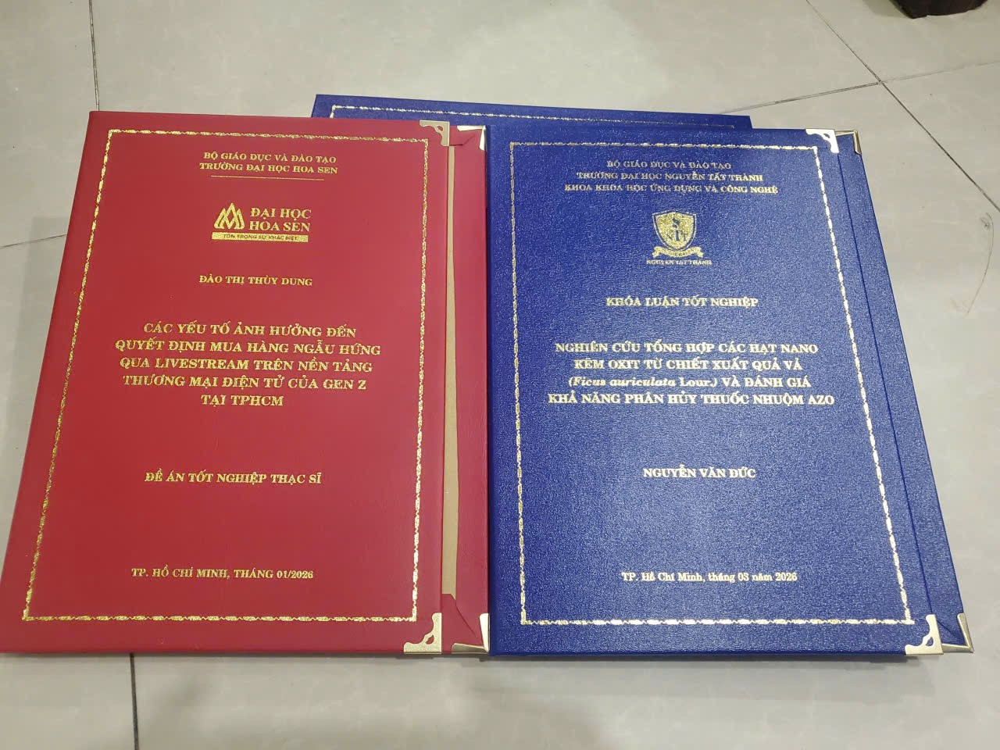
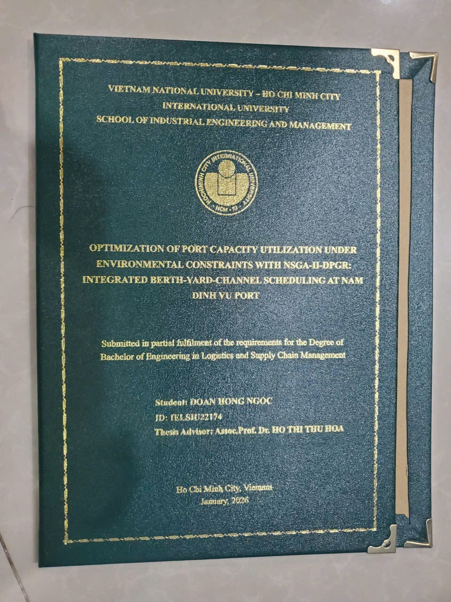

Dự Báo Xu Hướng Bảng Màu & Quy Chế In Bìa Mạ Vàng Luận Văn 2026
Thị trường xuất bản học thuật năm 2026 đang chứng kiến sự dịch chuyển mạnh mẽ từ các dòng bìa bóng kính truyền thống sang bìa cứng vân nhám ép nhũ nóng. Khảo sát 85% hội đồng bảo vệ tại khu Làng Đại Học cho thấy, hình thức ngoại quan của một cuốn bìa đồ án ảnh hưởng rất lớn đến ấn tượng ban đầu của giảng viên phản biện. Dưới đây là phân tích chi tiết về màu sắc và quy chế bìa từ thợ máy chuyên nghiệp.

Hình ảnh thực tế: Bộ đôi bìa Đề án Thạc sĩ ĐH Hoa Sen (Đỏ đô) và Khóa luận ĐH Nguyễn Tất Thành (Xanh Navy) khóa 2026
1. Phân Tích Quy Chế Màu Sắc 5 Trường Đại Học TPHCM (Mới Nhất)
Tôi đã trực tiếp đối chiếu từ Quy chế Trình Bày Luận Văn Phụ Lục II của các trường đại học để chốt lại định lượng và mã màu bìa mạ chuẩn nhất năm nay:
- Đại học Bách Khoa TPHCM (HCMUT): Bắt buộc sử dụng chất liệu simili màu Xanh Navy đậm, bề mặt sần không bóng. Chữ mạ vàng phải tuân thủ nghiêm ngặt font Times New Roman. Cỡ chữ 14-16 cho tiêu đề nhỏ và 24 cho tên đề tài. Điểm lưu ý: Phôi bìa Bách Khoa thường yêu cầu cực gắt việc không đóng viền gốc.
- Đại học Kinh Tế TPHCM (UEH) & ĐH Hoa Sen: Các đồ án thực tập doanh nghiệp và luận văn thạc sĩ có xu hướng chuyển sang Màu Đỏ Đun (Burgundy) hoặc đỏ đô sang trọng. Với nền màu đỏ đun, áp lực của máy dập CNC cần nâng lên mốc 2 tấn để nhũ vàng bám sâu, tránh bị cháy mép phôi bìa.
- Đại học Quốc Tế (ĐHQG TPHCM): Cho phép sử dụng màu Xanh Rêu (Dark Green) hoặc Xanh Dương đậm nẹp 4 góc kim loại mạ vàng sang trọng cho các chương trình kỹ thuật & liên kết quốc tế.
- Đại học Y Dược TPHCM: Cực kỳ khắt khe với màu Xanh Lá Cây thẫm truyền thống của ngành Y tế. Khuôn kẽm phải dập chìm chính xác sâu 0.5mm xuống mặt giấy bìa, không được xước chữ thập.
- ĐH Khoa Học Tự Nhiên & ĐH Sư Phạm Kỹ Thuật (HCM-UTE): Chuộng phong cách Minimalism, thường sử dụng Xanh Dương truyền thống dập nhũ vàng viền kép cổ điển.

Hình ảnh thực tế: Cuốn bìa cứng luận văn ĐH Quốc Tế (ĐHQG-HCM) màu xanh rêu nẹp góc kim loại mạ vàng 2026
2. Nhận Định Chuyên Gia: Cách Phối Màng Nhũ Kim Loại Tôn Vinh Bảng Điểm
"Nếu nội dung là linh hồn làm nên điểm 8 thì hình thức bìa cứng sẽ quyết định trực tiếp việc kéo điểm luận văn của bạn lên điểm 10". Với kinh nghiệm in bìa luận văn nhiều năm, một cuốn bìa xuất sắc phải giữ được khả năng phản quang ánh kim liên tục dưới luồng đèn huỳnh quang chiếu sáng của phòng bảo vệ nhưng đặc biệt không được làm chói, loá chữ khi hội đồng đọc cận mắt.
Lời khuyên dành cho bạn (Xu hướng 2026): Tới ngay các điểm in có sử dụng dải màng nhũ 24K ánh kim mờ (Matte Gold) thay vì dòng màng ánh bóng thông thường. Bóng mờ tạo cảm giác đắt tiền và bảo vệ mặt chữ khỏi trầy xước trong quá trình quăng quật, di chuyển.
3. Thay Lời Kết: Tại Sao Nên Ép Nhiệt Dập Từng Cuốn Tỉ Mỉ?
Nhiều sinh viên ham rẻ đã làm hỏng cả nỗ lực nghiên cứu dài nửa năm chỉ vì trót làm bìa mạ vàng giả (dùng mực nhũ xịt lên decal màu). Tại cửa hàng Anh Đức (Trụ sở Đại lộ Làng Đại Học Quốc Gia), chúng tôi chỉ cam kết một kỹ thuật duy nhất: Ép nhiệt khuôn kim loại cơ học đa lớp với dàn máy công nghiệp hiện đại bậc nhất. Cam kết lấy liền 2h, bền theo thời gian.
Cần ép kim đồ án gấp để kịp giờ bảo vệ sáng mai? Chúng tôi luôn sẵn sàng hỗ trợ trực tiếp từ xưởng không qua trung gian!
Gửi File & Nhận Tư Vấn Zalo (0963 458 633)